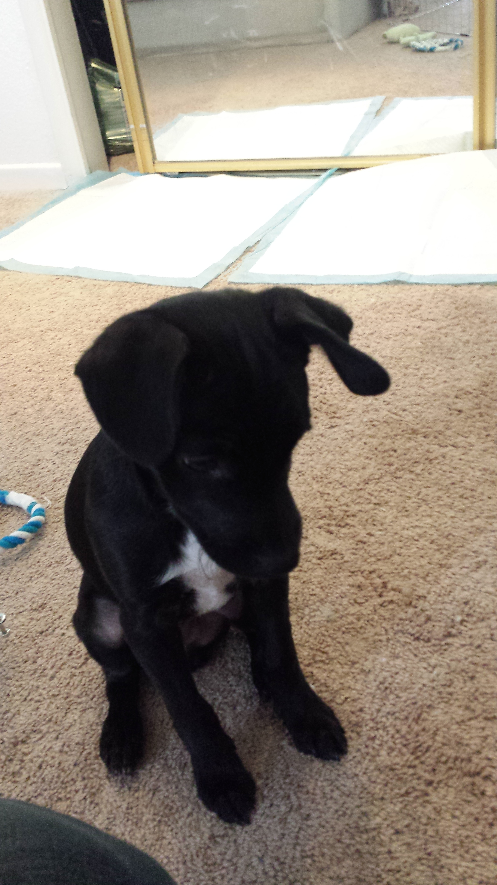

Conflict and how we all deal with it
August 10th, 2015
In every point in someones life, we all deal with conflict. Whether its internal conflict, or conflict with family or friends, it all pretty much puts a strain on your emotional health and your overall well-being. Bottom line is, we all deal with conflicts on a daily basis, whether it's a minor or major one. I think as we mature and grow wiser, it's important to really evaluate where your emotions comes from and figure out what the actual cause of the problems are.
If you've ever had a long term intimate relationship with another person, you probably know as well as I do that conflict is something that sometimes is unavoidable. When you spend so much time with a particular person and have that comfort level, it really is easy to let your emotions, in a sense, run wild. Your boundaries for certain things that your SO does, at times, makes you lose your patience. I'm gonna be talking about a recent conflict I've had with my girlfriend, and how I eventually broke it down to the root of the problem.
The times when my girlfriend and I fight the most is when one of us, or both, are in a somewhat bad/negative mood. We tend to lose our patience and tend to become more argumentative. We recently adopted a puppy together, and while it brings us a lot of joy and happyness, it also sometimes puts a strain on my relationship with my GF.

We sometimes fight about the stupidest things. What kind of food we should feed the dog, how we should train him, and all sorts of topics that don't necessarily need to be conversated in a hostile way. One particular argument stands out for me, where we fought about who should be walking the dog. lol, i know, it's stupid right? But both of us are big dog lovers and on that particular day, both of us were not in the right state of mind. So the argument proceeded, and we were pretty upset with each other.
Initially, my thought was, who cares who walks the dog? Why is she being like this? Why is she making such a big deal about who gets to hold the friggin leash? I didn't understand why she was so upset. So like most of our fights, we didn't really talk to each other for awhile, all while putting on a angry face that let each of us know that we weren't happy with one another.
After taking some time to cool off, we talked about our fight and why it escalated to the point it did. It was something very silly to be honest, and I didn't really take in consideration of the fact that she wanted to be more involved with taking care of OUR dog. Also, we weren't in the best of moods that day, which resulted us being very snappy with each other. I think it's very important to be able to analyze why the actual fight happened. Sometimes, you fight about topics that your not really even angry about, but there's topics that lie beneath the argument, that can make things a lot worse.
What did I learn from this? I learned that it's important to be able to understand the deeper issues at hand, and to be able to be more empathetic about people's current state of emotions. var happy_girlfriend == happy life. =] Till next week!